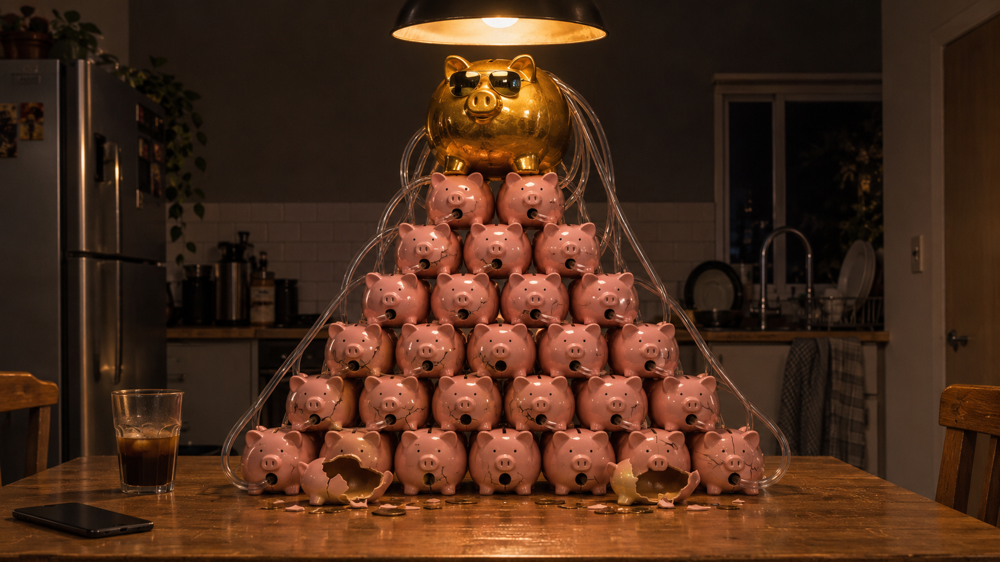

Canal Infantil con IA en YouTube: Los US$10K Son Mentira
Parte de The Attention Machine · Capítulo 7 de 7 →El Tipo de Mi Celular Me Quiere Vender una Máquina de Hacer Billetes, y por Algún Motivo No la Está Usando
Estaba mirando a Cory Doctorow destrozar a Mark Zuckerberg, que es una de mis formas preferidas de rezar, y justo después apareció lo que solo puedo describir como el mejor tutorial de maquillaje de Halloween de internet. El episodio era la enfermera de Silent Hill. La que no tiene cara. Gasa, una cabeza como una bolsa hinchada, un tic en cada articulación, una mujer convirtiendo su propia cara en una cosa húmeda sin rasgos, y haciéndolo con el pulso tranquilo de una cirujana.
Un tipo explicando cómo la plataforma te come. Una mujer borrándose la cara con una esponjita. Y después el algoritmo, con el timing de una logia secreta y el sentido del humor de un pasante lovecraftiano, me sirvió el tercer acto.
Otro tipo sin cara. O mejor dicho, vendiendo una.
Me miró a través del celular con la sinceridad imperturbable de Matthew McConaughey vendiéndole un Lincoln a un caballo, y me dijo que con Claude, un poquito de esfuerzo con IA y cero cara frente a cámara, podía armar un canal de YouTube para chicos y sacar un ingreso alternativo de diez mil dólares por mes.
Diez mil. Por mes. Por dibujitos. Hechos por un robot. Mirados por nenes que todavía usan pañal.
Y después, como funciona el feed, aparecieron mil como él. Mismo verso, distinto corte de pelo. Canales sin cara. Automatización con IA. Ingreso pasivo. Deslizás, ahí está de nuevo, ahora en un Lambo alquilado. Deslizás, ahora en una cocina alquilada. Deslizás, ahora en un Dubái alquilado. Era menos un feed que una plaga, de las bíblicas, con ranas, salvo que cada rana tenía un aro de luz y un código de descuento. (Como alguien cuya empresa se llama literalmente Blowing Frog, me lo tomé personal.)
La cosa es así. Este tema lo conozco. Me gano la vida armando pipelines de IA. Vi lo que ganan estos canales y lo que cuestan. Y los números que este tipo revoleaba no cerraban.
No “un poquito optimistas.” No “los resultados pueden variar.”
NO CERRABAN.
Así que hagamos la cuenta. En voz alta, como adultos, con una calculadora y un Margarita Hillbilly.
Para los no iniciados: un Margarita Hillbilly es tequila. Esa es la receta. Solo, sin lima, sin sal, sin sombrillita, y no del bueno. Del que te saca la pintura de la lengua, después el barniz, después una capa finita de tu alma inmortal, y le dice guarnición.
Prueba A: Un Tipo, un Micrófono y el Número 10.000
No lo voy a nombrar. No tiene nada de especial. Ese es el punto. Es un género, como “el tipo del bar que casi llega a primera” es un género, y si lo nombrara, en el hueco crecerían tres más, como una hidra con tienda en Shopify.
El verso, destilado, va así. Uno: elegí un nicho infantil, porque los chicos ven todo veinte veces y los chicos no saltean. Dos: dejá que la IA escriba los guiones, genere las imágenes, haga las voces. Tres: subí un video por día. Cuatro: ganancia. Cinco, y acá es donde sube la música: sumate a mi programa y te muestro el sistema exacto.
Fijate que el paso cinco es el único que tiene precio.
Guardate ese pensamiento, porque vamos a llevar este auto a un lugar adonde no esperaba ir.
STOP.
Pensabas que esto iba a ser una puteada contra la basura hecha con IA. Lo es, en parte. Pero vamos a parar el auto a un costado, bajarnos, abrir el capot y descubrir que el motor no es un canal de YouTube. Nunca lo fue. Traé una linterna. Traé la antitetánica.
La Cuenta que No Ponen en la Diapositiva
Arranquemos por la plata que YouTube paga de verdad.
Un canal de YouTube gana plata por publicidad recién cuando entra al Programa de Socios de YouTube. El nivel completo de monetización hoy pide 1.000 suscriptores más 4.000 horas de reproducción públicas en los últimos 12 meses (o 10 millones de vistas de Shorts en 90 días). En agosto de 2026 YouTube anunció que desde el 1 de febrero de 2027, los nuevos postulantes van a necesitar 8.000 horas de reproducción o 20 millones de vistas de Shorts. La vara para cobrar se DUPLICA. Nadie en mi feed lo mencionó, lo cual es raro, porque es más o menos lo primero.
Una vez adentro, los creadores se quedan con el 55% de la publicidad en videos largos y el 45% en Shorts. El número que te dice lo que un canal realmente se lleva a casa es el RPM: ingresos por cada mil vistas, después del corte de YouTube.
Y acá es donde el nicho infantil se te deshace en las manos como un plato de cartón mojado.
Treinta y tres centavos. Cada mil vistas.
Así que hagamos la cuenta que el tipo de mi celular se salteó.
US$10.000 por mes ÷ US$0,33 cada 1.000 vistas = unos 30,3 millones de vistas por mes.
Eso es más o menos un millón de vistas por día. Todos los días. Treinta días seguidos. Sin feriados, sin domingos, sin “el algoritmo estuvo raro esta semana.” Un millón de nenes, más o menos, bancándose tu canción de cuna robótica todos los santos días para que vos puedas pagar el alquiler.
Seamos generosos. Digamos que estás en la elite y sacás un dólar de RPM. Igual son 10 millones de vistas por mes, 333.000 por día, de un canal que, según el verso, arrancaste el martes pasado con un chatbot.
No soy el puto Warren Buffett. No hago interés compuesto de cabeza en los asados. Pero sé dividir, y la división dice que el sueño necesita la audiencia de un país mediano. Serví otro Margarita Hillbilly. Lo que viene es peor.
A Todo lo Hecho para Niños le Falta un Botón
Se pone peor, porque “hecho para niños” no solo achica el sueldo. Te saca las herramientas que usarías para crecer.
En los videos para niños, YouTube apaga los comentarios, la campanita de notificaciones, las pantallas finales y las tarjetas, las membresías del canal, los Super Chat y la opción de guardar para ver más tarde. Leé esa lista de nuevo con el sombrero de crecimiento puesto. Sin campanita no hay aviso de “video nuevo.” Sin pantallas finales no hay “mirá este después.” Sin comentarios no hay comunidad, no hay devolución, no hay señal. Sin membresías no hay segunda fuente de ingresos.
Estás armando un local sin cartel, sin puerta, sin vidrieras y sin caja registradora, salvo la que está atornillada al techo, donde un señor llamado YouTube decide si la abre o no.
Tu único camino a un millón de vistas por día es que el algoritmo de recomendaciones te elija a vos, una y otra vez, contra decenas de miles de canales que compraron el mismo curso al mismo tipo.
Lo que nos lleva a la parte donde la propia plataforma del tipo ya escribió el obituario.
YouTube Ya Escribió el Obituario
El 15 de julio de 2025, YouTube le cambió el nombre a su política de monetización de “contenido repetitivo” por ”contenido no auténtico,” para dejar claro que abarca los videos producidos en masa y repetitivos.
El 16 de julio de 2026, fue más lejos. El jefe de confianza y seguridad de YouTube, Matt Halprin, presentó tres categorías de contenido que no se pueden monetizar: contenido genérico, repetitivo o hecho con plantilla; contenido diseñado para angustiar o manipular emocionalmente; y personajes de IA hablando de temas sensibles como finanzas. Los canales con demasiado de cualquiera de las tres pierden la monetización. La IA sigue permitida. Los moldes de galletitas, no.
Mirá esas tres categorías y después mirá el verso de mi feed.
Un canal infantil diario hecho con la misma plantilla de IA, por alguien que aprendió la plantilla en un curso que también se la vendió a otras diez mil personas, es la definición de diccionario de la categoría uno. Halprin hasta dijo que los tutoriales pueden caer bajo la política cuando solo reproducen lo que ya abunda en la plataforma. El video del gurú está en la lista de especies en peligro. Es una serpiente comiéndose su propio tutorial.
Y el rincón infantil en particular está prendido fuego. En febrero de 2026, una investigación del New York Times encontró que el algoritmo de YouTube les servía videos generados con IA a cuentas configuradas como infantiles, y YouTube les cortó a esas cuentas los ingresos por publicidad y el acceso a YouTube Kids. Más de 200 organizaciones y especialistas, entre ellos Jonathan Haidt, Fairplay y la Federación Estadounidense de Docentes, firmaron una carta a Google y YouTube exigiendo prohibir el contenido de IA para el público más chico. El CEO, Neal Mohan, nombró el manejo de la basura hecha con IA como una prioridad máxima para 2026.
Entonces el plan de negocios es: meterte en la categoría que peor paga de la plataforma, que además es la más radiactiva en lo legal, usando exactamente el método de producción que la plataforma prometió en público desmonetizar, mientras la prensa y unos cuantos cientos de especialistas en desarrollo infantil miran con binoculares.
Eso no es un rebusque. Es tirarte en paracaídas adentro de un volcán con un paracaídas que le compraste al volcán.
Los Ricos No Hacen Tutoriales
Esta es la parte de la que puedo hablar por experiencia propia.
Conocí gente que gana cinco mil dólares por día. Diez mil por día. Y uno que hace que eso parezca una propina.
Estaba trabajando para una empresa de tecnología y el laburo me llevó a Dubái. Entra un cliente nuevo. El tipo es, y necesito que sostengas estas dos palabras en la misma mano sin que se te caiga ninguna, un periodista influencer. Con guardaespaldas. GUARDAESPALDAS, carajo. En plural. A una reunión de presentación con una empresa de tecnología.
Yo no tenía idea de quién era. Todos los demás en la sala, sí. Se sentía, como se siente un perro que decidió no morderte todavía.
Después de la reunión, hice lo que haría cualquier profesional que se respete. Lo googleé.
Patrimonio: más de 250 millones de dólares. Según internet, que jamás mintió sobre nada.
Creeme. Ese tipo no tenía un feed de Instagram vendiendo aceite de víbora. No tenía tiempo. Tenía guardaespaldas que alimentar.
Y lo principal de esa personalidad, lo que los une a todos, es esto: no pierden ni un minuto haciendo videos para Instagram, TikTok o YouTube contándote cómo lo hicieron. Apalancan su plata. Contratan. Compran lo siguiente. Y nunca, jamás, te cuentan la receta secreta.
¿Por qué? Porque la plata que ganás vos es plata que les sacás a ellos.
Ahora, un parche de honestidad sobre eso, porque un lector atento va a llegar primero. La plata de publicidad de los videos largos de YouTube no es una olla fija que se achica cada vez que aparece alguien nuevo. Los anunciantes pujan por impresiones; la torta crece y se achica con el mercado publicitario. Los ingresos de Shorts, en cambio, SÍ van a un pozo común que se reparte según la proporción de vistas, así que ahí es literalmente suma cero. Y aun en los videos largos, la lógica se sostiene, solo que una capa más abajo: mismo nicho, mismos nenes, mismo puñado de anunciantes aptos para chicos, mismos lugares en el algoritmo. Si el tipo de mi celular tuviera de verdad una máquina infantil de un millón de vistas por día, cada alumno que entrena es un competidor por su lugar en el feed.
Coca-Cola no da un webinar sobre la fórmula. KFC no vende una masterclass sobre las once hierbas y especias. Y el que tiene la máquina de hacer billetes no te vende la máquina.
Imprime. Después contrata a dos grandotes para que se paren al lado de la máquina.
Salvo que, y acá está la bisagra sobre la que gira toda esta puerta podrida, la máquina no funcione. Y el webinar sí.
Sam Brannan Vendía las Bateas
En 1848, un periodista y comerciante de San Francisco llamado Sam Brannan se enteró de que había oro en el aserradero de Sutter. No agarró una batea y salió para el río. Compró todos los picos, palas y bateas que encontró, llenó su almacén y después, según cuenta la historia, corrió por las calles de San Francisco revoleando una botella de polvo de oro y gritando que había oro en el río American.
Arrancó la fiebre. Brannan había comprado sus bateas a veinte centavos cada una. Las vendió a quince dólares. Se convirtió en el primer millonario de California.
Los mineros, en términos generales, no.
Es la estafa más vieja de la tierra del oro y nunca pasó de moda. No minás el oro. Minás a los mineros. El gurú de mi celular es Sam Brannan con un aro de luz, corriendo por las calles de Instagram al grito de “¡Oro! ¡Oro en el río American! Ah, y el río American es un canal infantil sin cara hecho con IA, y el río cierra en febrero, ¡y me quedan doce lugares en la cohorte!”
¿Y Quién Es el Cliente? Mirá para Abajo.

Acá está todo el post en una sola comparación. Si no te acordás de nada más, robate esto.
Para ganar US$10.000 por mes con un canal para niños al RPM mediano, necesitás unos 30 millones de vistas.
Para ganar US$10.000 por mes vendiendo un curso sobre eso a, digamos, US$997 el lugar, necesitás once compradores.
Once. Una cena. Una camioneta con tercera fila de asientos.
Treinta millones de vistas de nenes, u once adultos esperanzados. Sos un hombre de negocios racional. ¿Cuál perseguís?
Por eso estos videos no desaparecen. Su negocio no es la publicidad de YouTube. No es el canal. No es Claude, que, para que conste, escribe palabras y no puede producir un dibujito terminado por sí solo, así que lo de “con Claude” está haciendo mucho trabajo de disfraz. Su negocio sos vos. El producto es el embudo, el “sistema,” las llamadas de coaching, el Discord, la mastermind, la mejora hecha a medida, el siguiente nivel. El canal de YouTube es la carnada. Vos sos el pescado. Y el anzuelo, para exprimir la metáfora hasta que sangre, son tus propias ganas de martes a la noche de encontrar una salida.
También explica la forma de pirámide. No una estafa piramidal en el sentido legal, necesariamente. Pero mirá cómo crece: el alumno que no gana plata con el canal descubre que puede ganar plata haciendo videos sobre cómo ganar plata con el canal. Ahora es gurú. Ahora tiene alumnos. Los dibujitos para chicos quedan en la base de toda la estructura como unos cimientos que nadie visita, unas pocas miles de vistas cada uno, sosteniendo una catedral de webinars.
Y esto no es una teoría mía. La FTC viene demandando exactamente esta forma hace dos años.
Growth Cave (demandada en marzo de 2025): presuntamente se quedó con unos US$50 millones de consumidores desde 2020 con promesas de grandes ingresos, vendiendo su programa principal mediante anuncios en YouTube. La demanda de la FTC dice que los fundadores publicaban videos de su vida de lujo como prueba de que el programa funcionaba, y que esa vida de lujo la pagaban los consumidores que perdían plata. Leé esa oración dos veces. La prueba la pagaban las víctimas. Un cobro inicial, según la acusación: US$6.800. Según se informó, la operación se rebautizó como un programa con sabor a IA llamado PassiveApps.
FBA Machine / Passive Scaling: prometía ingresos garantizados con tiendas online manejadas por ”software potenciado con IA.” La FTC dice que les costó a los consumidores más de US$15,9 millones. El responsable aceptó en julio de 2025 una prohibición permanente de vender oportunidades de negocio.
Ecommerce Empire Builders: vendía un ”Imperio de Ecommerce potenciado con IA,” con programas de capacitación de casi US$2.000 y tiendas llave en mano por decenas de miles. Le prohibieron vender oportunidades de negocio en mayo de 2025.
Click Profit: promocionaba una ”supercomputadora de IA” detrás de tiendas online. Al menos US$14 millones, según la FTC.
Distintos productos. La misma máquina. IA en el folleto, ingresos en el titular, una vida de lujo de fondo, y el único que cobra seguro es el que tiene el micrófono.
Y la especie se reproduce. Deslizás una vez y conocés a los primos. El hombre del Renacimiento de los bienes raíces, que te vende los sitios secretos para encontrar embargos fiscales, como si el registro de la propiedad fuera un bar clandestino con contraseña. Los iluminados de Claude, envueltos en túnicas de ingeniería de prompts, que te dan la bala mágica: un prompt, un fin de semana, una vida nueva. El experto en Etsy con el imperio de dropshipping justo, o sea un depósito en la otra punta del planeta y un corazoncito de papel que dice HECHO A MANO.
Distintas carnadas. Los mismos dientes.
A los giles antes los embaucaba un tipo con una mesita plegable y tres cáscaras de nuez. Ahora tiene un set de podcast y un link para agendar una llamada. Las mismas nueces. La misma bolita. La bolita, como siempre, está en su bolsillo.
En Defensa de los Vendedores de Palas
Déjenme discutir contra mí mismo, porque el comentario más votado lo va a hacer, y prefiero que diga algo nuevo.
”Algunos canales sin cara sí ganan plata.” Cierto. Unos pocos. Existen canales sin cara reales y sostenidos, muchos con guionistas, editores humanos de verdad y un punto de vista. El estudio académico de arriba encontró algún que otro video infantil con IA que pegó. Las excepciones existen. También son exactamente lo que publicita una lotería. Mostrarme al ganador no es lo mismo que mostrarme las probabilidades.
”Enseñar es un negocio legítimo.” También cierto, y lo defiendo hasta la tumba. Mucha gente vende cursos honestos. El límite no es enseñar. El límite es la promesa de ganancias. “Así se edita más rápido” es una clase. “Así se ganan US$10.000 por mes” es una promesa, y según las propias reglas de la FTC, una promesa sobre ingresos tiene que ser típica y estar respaldada. En el segundo en que vendés un número, mostrame el número del alumno mediano. No el mejor. El mediano.
”Luis, vos armás pipelines de IA y los vendés. ¿No sos un vendedor de palas?” No mucho… Yo no vendo oro de los tontos. No hago promesas. Vendo lo que la gente me pide. “¡Che, quiero un canal de YouTube para chicos!” “Sí, señor”… ¿Nunca pregunto por qué? ¿O cuáles son sus objetivos?
”YouTube ya está ajustando las tuercas, ¿cuál es el problema?” YouTube les está ajustando las tuercas a los dibujitos. Nadie se las está ajustando a la publicidad de los dibujitos.
Lo que las Plataformas Deberían Hacer de Verdad
YouTube ya armó la lógica. Solo que la apuntó al extremo equivocado del caño.
La política de julio de 2026 se niega a pagarles a personajes de IA que hablan de finanzas. Bien. Pero el tipo de mi feed es una cara humana real haciendo promesas de ingresos concretas sobre una oportunidad de negocio, que es la versión más peligrosa, y pasa de largo. YouTube etiqueta el contenido sintético. Instagram etiqueta las imágenes hechas con IA. Ninguna etiqueta a un desconocido que te dice que te va a hacer ganar diez lucas verdes por mes.
Así se vería una mano dura contra la publicidad, y nada de esto requiere ciencia nueva:
1. Una etiqueta de promesa de ganancias. Todo video que promete un ingreso concreto con una oportunidad de negocio lleva una etiqueta visible, como hoy la lleva el contenido alterado o sintético.
2. Nada de promoción paga de promesas de ingresos sin aclaración. Si pautás anuncios prometiendo US$10.000 por mes, el anuncio enlaza a la cifra de ganancias típica, o no sale. Growth Cave presuntamente armó una máquina de US$50 millones con anuncios de YouTube. El sistema de anuncios es la puerta de entrada. Cerrala con llave.
3. Tratar a los reincidentes como granjas de basura. YouTube ya les saca la monetización a canales enteros cuando demasiado de su contenido es de plantilla. Un canal cuyo catálogo entero es “ganá plata con IA” que desemboca en un programa pago también es una plantilla. Misma regla, misma consecuencia.
4. Matar de raíz el verso de “hecho para niños” como truco para hacer plata. Si YouTube va en serio con proteger a los nenes de la basura hecha con IA, entonces los videos que reclutan a las fábricas de basura son parte de la cadena de suministro.
La plataforma no está indefensa. Sabe perfectamente quién compra anuncios, quién enlaza a páginas de pago y qué “capacitación gratuita” termina en una llamada de ventas. Solo que todavía no decidió que vale la pena protegerte de la gente que cree que vos sos el producto.
Cory Doctorow, el tipo que estaba mirando cuando empezó todo este descenso, tiene una palabra para lo que pasa cuando una plataforma deja de servir a sus usuarios una vez que los tiene atrapados. La palabra es enshittification, la “mierdificación.” Se la dejo a él. Se la ganó.
Preguntas Rápidas Desde la Tribuna Barata
¿Un canal infantil de YouTube sin cara hecho con IA puede ganar US$10.000 por mes?
Es posible en los papeles y raro en la práctica. Con el RPM mediano de 2026 para contenido infantil, de unos US$0,33, US$10.000 por mes requieren unos 30 millones de vistas mensuales, alrededor de un millón por día. Aun con un RPM de US$1 son 10 millones de vistas por mes.
¿Por qué los videos para niños pagan tan poco?
Desde enero de 2020, después de un acuerdo por COPPA de US$170 millones entre Google/YouTube, la FTC y la Fiscalía General de Nueva York, el contenido para niños no puede mostrar anuncios personalizados, solo contextuales. Además se desactivan los comentarios, la campanita de notificaciones, las pantallas finales y las membresías.
¿YouTube desmonetiza los videos generados con IA?
No por usar IA. YouTube desmonetiza el “contenido no auténtico”: videos producidos en masa, repetitivos o de plantilla, contenido angustiante hecho para conseguir vistas y personajes de IA hablando de temas sensibles como finanzas. La política cambió de nombre en julio de 2025 y se aclaró en julio de 2026.
¿Cuáles son los requisitos del Programa de Socios de YouTube?
Hoy: 1.000 suscriptores más 4.000 horas de reproducción públicas en 12 meses, o 10 millones de vistas de Shorts en 90 días. Desde el 1 de febrero de 2027, los nuevos postulantes van a necesitar 8.000 horas de reproducción o 20 millones de vistas de Shorts.
¿Cómo detecto una estafa de automatización de YouTube o de ingresos con IA?
Una promesa de ingreso mensual concreto, una vida de lujo usada como prueba, una “capacitación gratuita” que termina en una llamada de ventas, urgencia (“quedan doce lugares”) y ninguna cifra de ganancias típicas. Pedí los resultados del alumno mediano. Si no te los pueden mostrar, ya tenés tu respuesta.
¿La FTC actuó contra cursos para ganar plata con IA?
Sí. Entre los casos recientes están Growth Cave (unos US$50 millones según la acusación, vendido mediante anuncios en YouTube), FBA Machine/Passive Scaling (US$15,9 millones), Ecommerce Empire Builders y Click Profit, varios con prohibiciones permanentes de vender oportunidades de negocio. Las estafas sospechosas en Estados Unidos se denuncian en ReportFraud.ftc.gov.
Así que esa es la autopsia.
En algún lugar más atrás de mi feed, la enfermera de Silent Hill sigue moviéndose a los espasmos por su pasillo, sin cara. ¿Y sinceramente? El suyo es el negocio sin cara más honesto. Se tomó veinte minutos, mostró cada paso y nunca me prometió diez lucas. Solo me prometió pesadillas. Y cumplió.
Los dibujitos valen treinta y tres centavos cada mil. La plataforma prometió dejar de pagarlos. Los chicos no saben leer la etiqueta de IA. Y en algún lugar hay un tipo parado en un arenero donde nadie cavó nunca, con una pala de oro en la mano, bajo un aro de luz, explicándole a una fila de palitas de plástico exactamente cómo se hizo rico cavando.
No cavó.
Vendió la pala. La tenés vos en la mano.